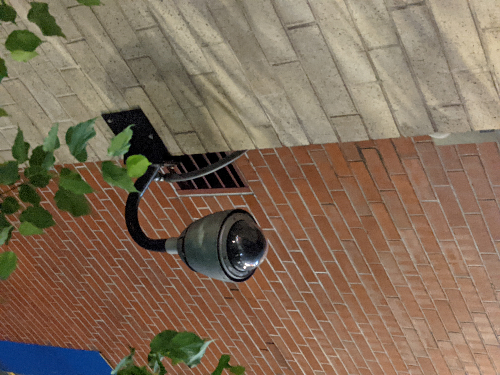

Introduction
Within our current era of technology, digitality has become increasingly important to communication. Especially within the pandemic, which instated physical barriers between us by quarantine, a large portion of our capability to connect is relegated to our devices. I can speak personally towards this fact, considering my entire Freshman year in college has been exclusively online. That’s an entire year of prospective social experiences, everything from interactions with peers to meetings with professors, all funneled through the conduit of the digital screen. There’s something strange about it, though.
Despite the hours upon hours that I spend staring one screen or another, I don’t think I really see the screen for what it is. I see the information it presents to me, as a herald of media, but I rarely take full appreciation of the screen itself. I never quite seem to notice the aluminum or silicon that goes into the display glass. Rationally, I understand that these materials are there, but their presence fades into the backdrop. It’s kind of like that with all forms of media. When you see a film, you’re not really considering the apparatus you’re viewing it on as an integral part of the film. The television, or the computer screen, or the airplane monitor that you’re viewing it on won’t fundamentally change the film itself beyond your peripheral experience of it. Similarly, in literature, we do not read in a deep, appreciative awareness of the ink on paper that delivers the written narrative. There’s a certain way that we get removed from the material in how media accesses our abstract thoughts.
It’s in the digital that we see this phenomenon become even stronger. When we think of the internet, where digital information lives, we think of a metaphysically nebulous cyberspace, almost existing within the realm of thought rather than substance. Thus, communication from the internet doesn’t immediately appear to be a material phenomenon. We almost imagine the internet as a ‘mind’ of its own. Rather than literature, where information is communicated from page to person, we often comprehend information through the internet as a direct delivery from one ‘mind’ to another. “By some accounts, the digital age fundamentally differs from all previous information epochs insofar as information has finally achieved what it has aspired to throughout history, namely, unburdened itself from the shackles of matter” (p. 1042, Blanchette, 2011).
Of course, this is a false assumption that skirts past us by virtue of being implicit, almost unconscious to the average person. In fact, the digital is extremely material. If you pay attention, you can see the architecture that forms the bedrock of the digital (Burrington, 2016). Even in the bits and bytes of digitality, there is a materiality that is often disregarded (Blanchette, 2011). Throughout this essay, you will be accompanied by various pictures of security cameras to give you a sense of how ever-presently prevalent digital infrastructure is, especially within urban areas such as New York. It’s also quick reminder that I’m watching you. Contrastingly, the dancing cows are purely decorative.
The materiality of the digital is something which is cloaked, but deeply important to the current technological age. One cannot truly know the digital without understanding its infrastructure, and when present, that ignorance can lead to some pernicious consequences.